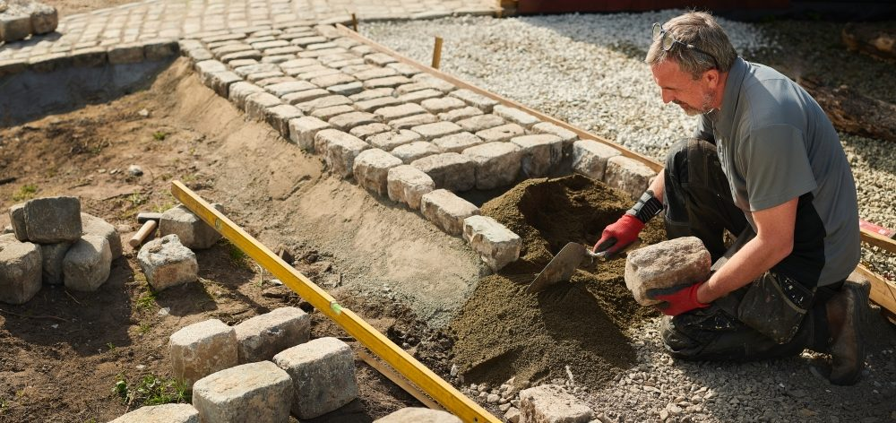

GaLaBau 2026 in Nürnberg: Vier Tage, drei Themen, ein Fachkräfteproblem
Vom 15. bis 18. September trifft sich die Branche zur Leitmesse. Klimaanpassung und emissionsfreie Technik stehen im Programm – die Frage, wie Betriebe Leute finden und halten, steht in jeder Halle im Raum.

Alle zwei Jahre wird Nürnberg für vier Tage zur Hauptstadt des Garten- und Landschaftsbaus. Die GaLaBau 2026 öffnet am Dienstag, 15. September, und läuft bis Freitag, 18. September, im Messezentrum Nürnberg. Die Messe versteht sich als umfassendste Gesamtschau im grünen Bereich und richtet sich an Fachbetriebe des Garten-, Landschafts- und Freiflächenbaus, an Landschaftsarchitekten und an Fachplaner aus Behörden.
Termine, Zeiten, Tickets
| Tag | Öffnungszeit |
|---|---|
| Dienstag, 15. September | 9 bis 18 Uhr |
| Mittwoch, 16. September | 9 bis 18 Uhr |
| Donnerstag, 17. September | 9 bis 18 Uhr |
| Freitag, 18. September | 9 bis 17 Uhr |
Tickets gibt es ausschließlich online: Die Tageskarte kostet 45 Euro, die Dauerkarte für alle vier Tage 85 Euro. Adresse: Messezentrum 1, 90471 Nürnberg.
Drei Themen setzt die Messe selbst
Das Trendbarometer, das die Messe im Januar veröffentlicht hat, nennt drei Schwerpunkte für 2026: Nachhaltigkeit und Klimaanpassung, den Fachkräftemangel und emissionsfreie Technologien. Im Programm spiegelt sich das im „Grün-Blauen Pfad" zu Wasser- und Grünflächenmanagement, in einer E-Mobility Area mit elektrischen Maschinen und Fahrzeugen und im Landschaftsgärtner-Cup, mit dem der Nachwuchs sichtbar gemacht wird. BGL-Geschäftsführer Dirk Böcker erwartet, dass Klimaanpassung das prägende Thema des Jahres wird.
Beim Personal beschreibt das Trendbarometer einen Mangel, der sich durch ganz Europa zieht und besonders Bauleiter und Projektverantwortliche betrifft. Als Ursachen nennt die Messe die steigende Komplexität der Projekte, wachsende Anforderungen an die Beschäftigten und ein Imageproblem des Berufs bei jungen Menschen.
Was Betriebe aus vier Tagen herausholen
Wer die GaLaBau kennt, weiß: Man läuft an einem Tag nicht durch. Die Wege zwischen den Hallen sind lang, die Maschinenhallen kosten am meisten Zeit. Drei Hinweise aus der Praxis:
- Vorher festlegen, was entschieden werden soll. Eine Maschinenanschaffung, ein neuer Lieferant, ein Pflegekonzept – wer mit zwei konkreten Fragen kommt, geht mit zwei Antworten.
- Personalthemen bewusst einplanen. Verbände, Bildungsträger und Dienstleister sind vor Ort. Ein halber Tag für das Thema Nachwuchs und Mitarbeitergewinnung zahlt sich in der Saison 2027 aus.
- Den eigenen Betrieb mitbringen. Vorarbeiter und Bauleiter sehen auf der Messe, was Wettbewerber bieten. Wer sein Team mitnimmt, zeigt Wertschätzung – und bekommt ehrliche Einschätzungen zu Technik und Ausstattung.
Unsere Branchenumfrage läuft auf der Messe
GaLaBau Kompass ist mit einem Umfrageteam in Nürnberg. Wir fragen Inhaber und Führungskräfte, wie sie 2026 Mitarbeiter gesucht haben, welche Wege zu Einstellungen geführt haben und was die Suche kostet. Zwölf Fragen, drei Minuten, anonymisierte Auswertung im Oktober. Wer nicht auf der Messe ist, kann online teilnehmen. Jeder Teilnehmer erhält als Dankeschön den Standort-Check.
Quellen
- Messe Nürnberg: GaLaBau 2026 – Besuchen (Termine, Öffnungszeiten, Tickets), galabau-messe.com/de-de/besuchen, abgerufen am 5. September 2026.
- Messe Nürnberg: Das Trendbarometer der GaLaBau 2026, Pressemitteilung Januar 2026, galabau-messe.com.
- Bundesverband Garten-, Landschafts- und Sportplatzbau e. V. (BGL): Branchenstatistik 2025, Pressemitteilung vom 27. Februar 2026, presseportal.de.
Drei Minuten, die der Branche helfen.
Wie finden Betriebe 2026 Mitarbeiter? Nehmen Sie teil – die Ergebnisse gibt es im Oktober kostenlos.
Jetzt teilnehmen →Wie gut ist Ihr Standort für Fachkräfte?
PLZ eingeben, Fachkräfte-Potenzial im Umkreis sehen. Kostenlos, Ergebnis sofort.
Standort prüfen →